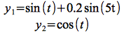
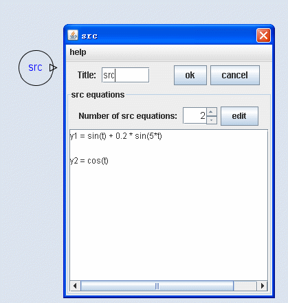
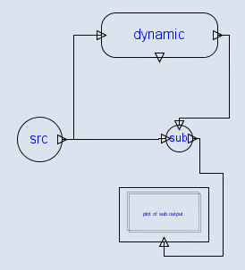

Data Source is used to generate signals. Time “t” is a global variable, it represents the time dimension in the simulation. Usually, the outputs of the data source are functions of time, as are shown in the picture

the outputs of the data source in the picture are defined as functions of variable time “t”.

The output of the Data Source can be connected to various modules

The connection to other modules can done by Right-Click the Source icon, and then select the “connect (y) to ...” menu item from the pop up menu that will appear after you right-click the icon.
The dimension of the output signal of the data Source can be changed, but take in mind that it must be consistent with other relevant signals within the system.